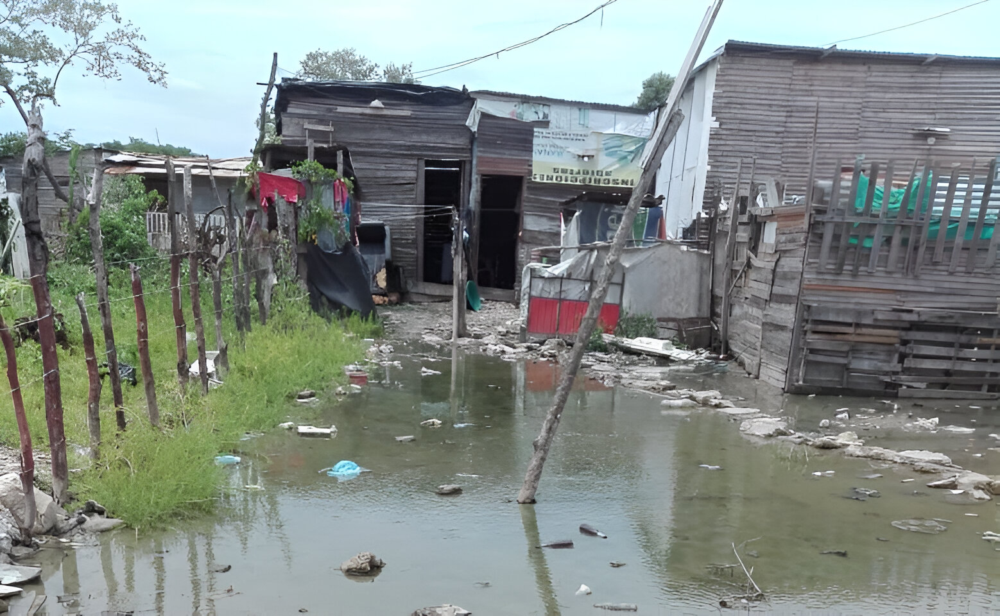
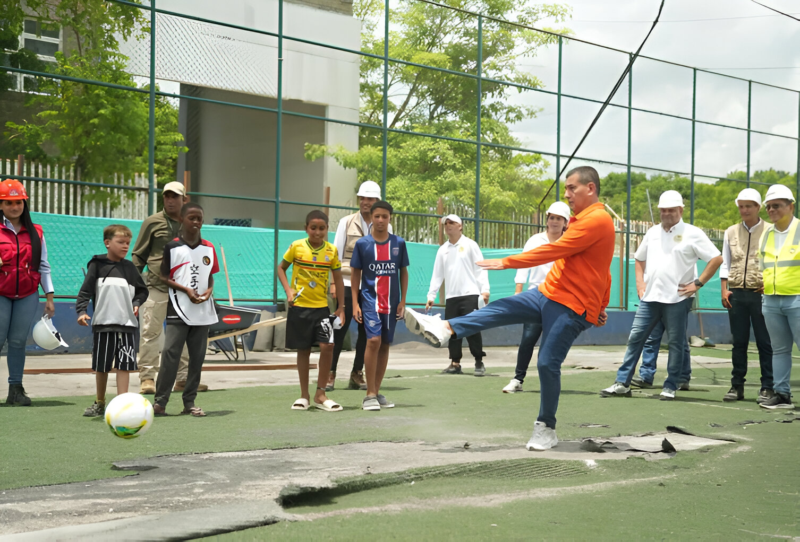

Es fundamental mejorar y mantener los espacios deportivos del barrio. La renovación de la cancha sintética es un gran avance, pero necesitamos seguir con el mantenimiento y crear más espacios recreativos para nuestros niños y jóvenes.
👍 45 Me gusta
JG
Juan Gómez
Residente
Propongo continuar con la pavimentación de las calles restantes del barrio. Las calles 9 y 10 ya están listas, pero aún quedan vías sin pavimentar que se vuelven intransitables en época de lluvias.
👍 67 Me gusta
LP
Laura Pérez
Docente
Debemos replicar el modelo de apoyo a familias vulnerables que se hizo con el Canadiense. Muchas familias necesitan viviendas dignas y seguras. Es necesario crear un programa permanente de mejoramiento de viviendas.
👍 52 Me gusta
CM
Carlos Martínez
Comerciante
Es urgente construir más puentes y mejorar la conectividad del barrio. El nuevo puente que une Fredonia con Nuevo Paraíso ha mejorado mucho la movilidad, necesitamos más obras como esta para conectar mejor toda la zona.
👍 38 Me gusta
AS
Ana Silva
Joven del Sector
Propongo crear brigadas de limpieza y mantenimiento ambiental después de las tormentas. El EPA hizo un gran trabajo con los árboles caídos, pero podemos organizarnos como comunidad para prevenir y actuar rápidamente en emergencias.
👍 89 Me gusta
✕
Cambiando el Entorno: Comunidad, educación y sostenibilidad
Principales Problemáticas
El barrio Olaya Herrera, es un lugar vibrante donde se entrelazan diversas realidades sociales, económicas y culturales. A pesar de su riqueza comunitaria, enfrenta problemas persistentes como la desigualdad, la falta de oportunidades laborales, la deserción escolar, la violencia juvenil, la escasez de infraestructura social y la falta de participación ciudadana efectiva

Las fuertes lluvias causan inundaciones frecuentes en el sector, afectando a familias de bajos recursos. La falta de sistemas de drenaje adecuados provoca que las viviendas se aneguen, generando pérdidas materiales y riesgos para la salud.
La acumulación de basura en las calles es un problema recurrente que afecta la salud pública. La falta de cultura de reciclaje y contenedores suficientes genera malos olores, plagas y contaminación visual en la comunidad.
La contaminación del aire afecta directamente la salud de los residentes, especialmente niños y adultos mayores. El humo y las partículas suspendidas crean un ambiente poco saludable para toda la comunidad.
Los incendios en viviendas precarias dejan a familias enteras sin hogar. La falta de prevención y respuesta rápida ante emergencias pone en riesgo vidas y destruye el patrimonio de las familias más vulnerables.
Devastación tras un incendio en comunidad vulnerable
¿Qué Podemos Hacer?
Es momento de actuar y generar cambios positivos en nuestro sector
Avances y Transformaciones en la Comunidad

El alcalde de Cartagena, Dumek Turbay Paz, dio inicio a las obras de renovación integral de la cancha sintética del barrio Fredonia, con una inversión superior a $1.211 millones. El proyecto incluye la reconstrucción completa del escenario deportivo, instalación de grama sintética, nuevos juegos infantiles, zonas de descanso e iluminación moderna. Esta intervención busca fortalecer la recreación, la seguridad y la integración social de los habitantes del sector.
El alcalde de Cartagena, Dumek Turbay, cumplió su promesa al niño influencer Santiago Matos, conocido como "el Canadiense", entregándole una nueva vivienda totalmente equipada en el barrio Fredonia. La casa, construida desde cero, simboliza la mejora de las condiciones de vida de su familia y representa un ejemplo de cómo las acciones comunitarias pueden transformar realidades en los barrios de Cartagena.
El gobernador de Bolívar, Yamil Arana Padauí, dio inicio a la pavimentación de la Calle 9 del barrio Fredonia, como parte del plan de rehabilitación vial en Cartagena. La obra, que abarca 430 metros lineales y hace parte de una inversión total de $60.000 millones, busca mejorar la movilidad y la calidad de vida de los habitantes, eliminando los problemas de barro y deterioro en la vía.
La Alcaldía de Cartagena, liderada por Dumek Turbay Paz, entregó un nuevo puente en el barrio Fredonia, conectando de forma segura esta zona con Nuevo Paraíso. La obra, construida sobre el Canal Calicanto Viejo, reemplaza una estructura deteriorada y mejora la movilidad y seguridad de cientos de familias. Además, facilita el acceso de los estudiantes a la Institución Educativa de Fredonia, representando un avance clave en infraestructura y bienestar comunitario.
La comunidad de Fredonia celebró la inauguración de la Calle 10, obra liderada por la Gobernación de Bolívar dentro del plan de mejoramiento vial. Con una intervención de 430 metros lineales y la participación de mano de obra local, el proyecto generó empleos y mejoró la movilidad, seguridad y calidad de vida de los habitantes. Esta nueva vía simboliza progreso y esperanza para el barrio.
Tras una fuerte tormenta que provocó la caída de más de 20 árboles en el barrio Fredonia, la Alcaldía de Cartagena, a través del Establecimiento Público Ambiental (EPA), realizó labores de poda y tala para mitigar daños en viviendas, vías y en el CDI Nuevo Mundo. Además, se efectuó el rescate y monitoreo de fauna silvestre afectada, demostrando el compromiso ambiental y de seguridad del Distrito con la comunidad.